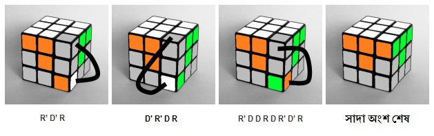

এক্ষেত্রে আপনাকে সাদা অংশের কর্নার পিস গুলোকে নির্ধারিত জায়গায় বসাতে হবে। প্রকৃতপক্ষে এই পদ্ধতিরও নির্দিষ্ট নিয়ম খুব একটা লাগে না। রুবিক্স কিউব নিয়ে ক্রস মেলানোর পর নিজেই কিছুক্ষণ নাড়াচাড়া করুন। দেখবেন মিলে গেছন।
তারপরও কয়েকটা কেস এর জন্য কিছু নিয়ম চিত্রে দেখানো হলঃ

এবার রুবিক্স কিউবটা হাতে নিয়ে দেখুন। প্রথম লেয়ার মেলানো শেষ!!!